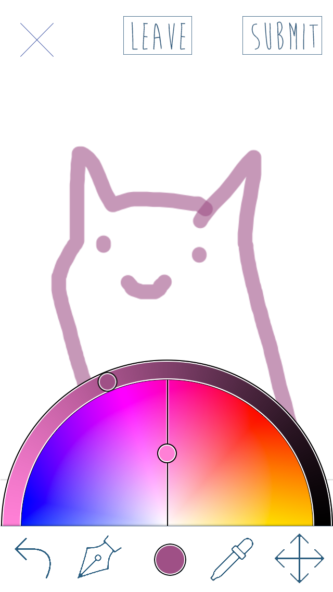
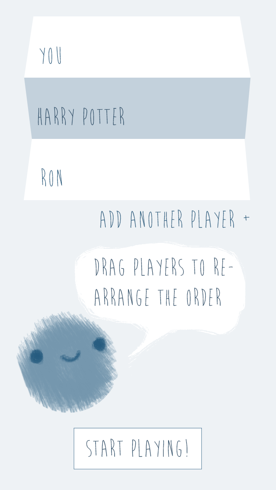
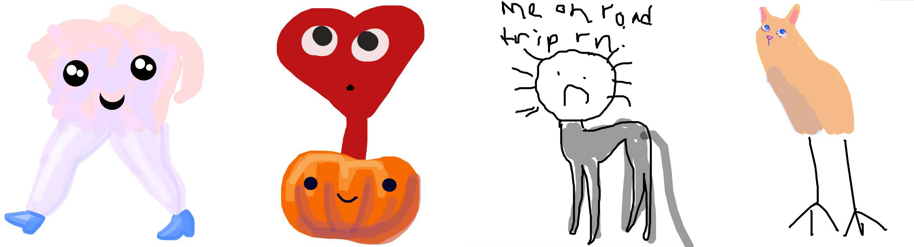

Sharacter
Sharacter is an iOS app game based on the French Surrealist Parlor game 'Exquisite Corpse'. Anton Holmberg is developing the app and I am designing the graphics and interaction as a personal project. You can view a prototype in Invision.
Inspiration
I worked at an art camp for children in the Summer of 2014, and one of our projects was "Exquisite Corpse". To play the game, participants take turns drawing parts of a creature on a piece of paper folded so they can't see the others' work. When the creature is unfolded, it is usually absurd and hilarity ensues. Anton saw an opportunity to turn this into a mobile app, and since we couldn't find a satasfactory digital version of the game (and I wanted to play it), I agreed.
Look and Feel
We decided early on to make the game fun and to let real world implementation of Exquisite Corpse influence its design. I designed folding animations and graphics with pencil sketch feel to keep the game light and playful.
Game Setup
We prioritized simplicity and charm in our interface design and tried to experess both in our game setup and drawing inferface. To do this, we used a conversational onboarding experience. We also chose to use a gallery to represent finished and in progress drawings. We started by researching other shared games and found that a menu was widely used. We used this in early versions until a friend mentioned that a gallery a la Pinterest would be more suitable. After realizing that a 3 column gallery would save space horizontally, focus on the drawing rather than the set up, and reference the timeless act of posting art on refrigerators and museum walls, we implemented it.
Drawing UI
We started with a color picking UI where the luminosity, saturation, transparency, and hue were represented as separate controls on a dfferent screen. I saw an opportunity to minimize space usage and leverage the beauty and shape of the color wheel. When selected from the bottom menu, half of the color wheel appears. The user grabs and spins the wheel to choose the hue and slides the circle along the radius to choose the saturation. The luminosity lies along the circumferance. Users have found this color picking interface intuitive and fun to use.

|

|

|
Results
The app is live for developers. Here are some drawings produced by test users.
